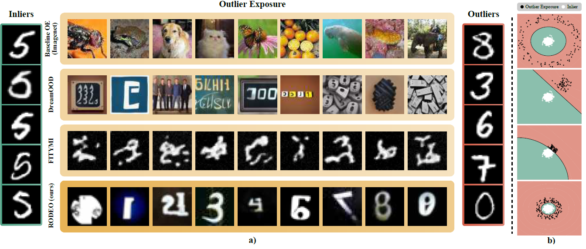
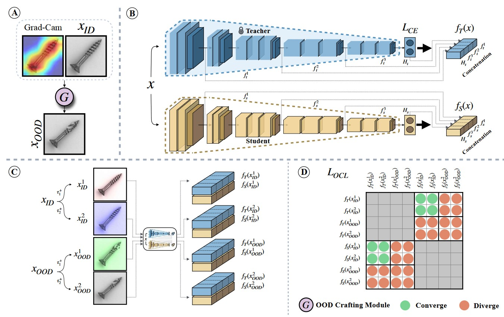

|
Ali Ansari I'm a final year B.Sc student majoring in Computer Engineering at Sharif University of Technology in Tehran, Iran. During My bachelor past bachelor years, I have been working on various research projects in the different domains of Trustworthy AI. Nowadays, I'm preparing myself for graduate studies in my fields of interest. Currently, I'm a junior research assistant at Chinese University of Hong Kong under the supervision of Dr. Pin-Yu Chen and Prof. Tsung-Yi Ho on LLMs security. I have been a member of Prof. Rohban's RIML lab since 2022. There, I have been working on various projects in the fields of adversarial robustness, outlier detection and backdoor detection. In Summer 2023, I was a research intern in Hong Kong University of Science and Technology under the supervision of Prof. Goharshady working on leveraging parameterized algorithms to minimize cache misses. |
{kind=link}
ResearchGenerally, I'm interested in designing safe and efficient intelligent systems. Driven by this interest, I enjoy tackling problems on different domains relevant to Trustworthy AI. Additionally, I enjoy investigating and bringing novel ideas to deep learning architectures, such as transformers. |
Publications |
|

|
RODEO: Robust Outlier Detection via Exposing Adaptive Out-of-Distribution Samples
Hossein Mirzaei, Mohammad Jafari, Hamid Reza Dehbashi, Ali Ansari, Sepehr Ghobadi, Masoud Hadi, Arshia Soltani Moakhar, Mohammad Azizmalayeri, Mahdieh Soleymani Baghshah, Mohammad Hossein Rohban ICML, 2024 In this work, we designed a novel method to detect outliers in adversarial settings. We were able to achieve state-of-the-art results on various tasks of outlier detection by generating adaptive outliers and expose them while training the anomaly detector adversarially. |
 |
Scanning Trojaned Models Using Out-of-Distribution Samples
Hossein Mirzaei, Ali Ansari*, Bahar Dibaei Nia*, Mojtaba Nafez, Moein Madadi, Sepehr Rezaee, Zeinab Sadat Taghavi, Arad Maleki, Kian Shamsaie, Mahdi Hajialilue, Jafar Habibi, Mohammad Sabokrou, Mohammad Hossein Rohban Submitted to NeurIPS, 2024 In this work, we designed a trojan scanning method which is robust in various aspects, including trojan attack type, label mapping, and adversarial robustness of the classifier. We further propose a version of our work which requires no access samples from the model's training distribution. |
|

|
Toward Robust Novelty Detection Under Style Shifts
Hossein Mirzaei, Mojtaba Nafez, Moein Madadi, Arad Maleki, Mahdi Hajialilue, Zeinab Sadat Taghavi, Sepehr Rezaee, Ali Ansari, Bahar Dibaei Nia, Kian Shamsaie, Mohammadreza Salehi Jafar Habibi, Mahdieh Soleymani Baghshah, Mohammad Sabokrou, Mohammad Hossein Rohban Submitted to NeurIPS, 2024 In this work, we designed a novelty detection method which is robust to style shifts in the data distribution. By distinguishing between core features and style features and using a teacher-student scheme, we were able to achieve state-of-the-art results on various dataset pairs. |
|
Design and source code from Jon Barron's website. |